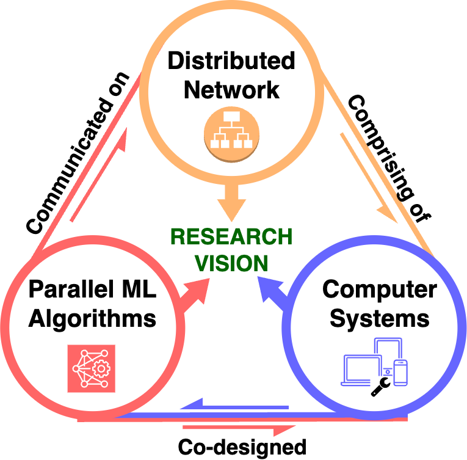
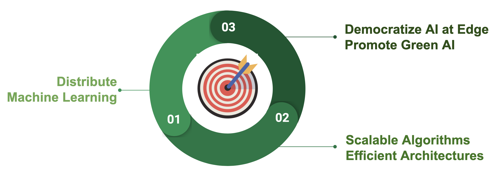

|
Research
|
 |
Our research focuses on advancing distributed edge intelligence and optimizing efficiency within the increasingly interconnected digital landscape. We achieve this through the implementation of distributed machine learning, designing scalable algorithms and efficient architectures to democratize artificial intelligence (AI) and foster green AI at the edge. This approach enables local processing of decentralized data streams at source devices while facilitating distributed computations with minimal communication overhead, thereby enhancing the performance, efficiency, and resiliency of machine learning systems.

Our research strategy is structured around three key areas:
Distributed Networks: We develop optimization techniques tailored to the unique requirements of edge environments. Our efforts include minimizing synchronization time to optimize processor utilization and reduce latency. Additionally, we have worked on transforming dense, large-scale problems into memory-efficient (sparse) and separable problems suitable for parallel computations.
Parallel Machine Learning Algorithms: Our work focuses on training and updating machine learning models with an emphasis on low memory cost, improved latency, and privacy. We have developed a scalable distributed algorithm that minimizes communication costs for parallelizing model training. Furthermore, we have demonstrated the effectiveness of constructing memory-efficient data summaries and their parallel implementation as potential solutions for accelerating model learning.
Computer Systems: We co-design energy-efficient computing systems to make AI accessible at the edge, promoting green AI. Our contributions include co-designing software and hardware accelerators for energy-efficient distributed training of Support Vector Machines across multiple FPGAs. Additionally, our ViTALiTy project enhances the efficiency of Vision Transformers by overcoming the quadratic cost through the decomposition of attention into low-rank linear and sparse components, followed by the design of a pipelined hardware-level accelerator for fast execution of the static linear Taylor attention component. Our NetDistiller framework improves the task accuracy of Tiny Neural Networks for edge deployment without additional inference overhead. Looking beyond traditional silicon-based computing, our collaboration on ConvLight has resulted in a novel hardware accelerator for convolutional neural networks, leveraging memristor-integrated photonic computing to achieve high performance, low power consumption, and high density.
|